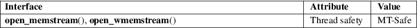

open_memstream, open_wmemstream − open a dynamic memory buffer stream
Standard C library (libc, −lc)
#include <stdio.h>
FILE *open_memstream(char **ptr, size_t *sizeloc);
#include <wchar.h>
FILE *open_wmemstream(wchar_t **ptr, size_t *sizeloc);
Feature Test Macro Requirements for glibc (see feature_test_macros(7)):
open_memstream(),
open_wmemstream():
Since glibc 2.10:
_POSIX_C_SOURCE >= 200809L
Before glibc 2.10:
_GNU_SOURCE
The open_memstream() function opens a stream for writing to a memory buffer. The function dynamically allocates the buffer, and the buffer automatically grows as needed. Initially, the buffer has a size of zero. After closing the stream, the caller should free(3) this buffer.
The locations pointed to by ptr and sizeloc are used to report, respectively, the current location and the size of the buffer. The locations referred to by these pointers are updated each time the stream is flushed (fflush(3)) and when the stream is closed (fclose(3)). These values remain valid only as long as the caller performs no further output on the stream. If further output is performed, then the stream must again be flushed before trying to access these values.
A null byte is maintained at the end of the buffer. This byte is not included in the size value stored at sizeloc.
The stream maintains the notion of a current position, which is initially zero (the start of the buffer). Each write operation implicitly adjusts the buffer position. The stream’s buffer position can be explicitly changed with fseek(3) or fseeko(3). Moving the buffer position past the end of the data already written fills the intervening space with null characters.
The open_wmemstream() is similar to open_memstream(), but operates on wide characters instead of bytes.
Upon successful completion, open_memstream() and open_wmemstream() return a FILE pointer. Otherwise, NULL is returned and errno is set to indicate the error.
For an explanation of the terms used in this section, see attributes(7).

POSIX.1-2008.
open_memstream()
glibc 1.0.x.
open_wmemstream()
glibc 2.4.
There is no file descriptor associated with the file stream returned by these functions (i.e., fileno(3) will return an error if called on the returned stream).
Before glibc 2.7, seeking past the end of a stream created by open_memstream() does not enlarge the buffer; instead the fseek(3) call fails, returning −1.
See fmemopen(3).
fmemopen(3), fopen(3), setbuf(3)